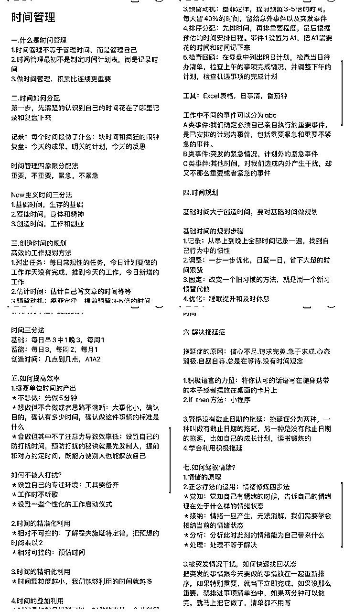

来源：https://d8ez8yi1x2.feishu.cn/docx/OxO5dfvHAoOFbHxPfSmcSASYnlf
嗨，各位生财的伙伴们好。我是小雨，一个20岁的宝妈，左手创业，右手带娃。通过自媒体让我月收入稳定3-5W，目前带领了10000+学员再做
不用我说所有的伙伴都知道要赚钱，并且有一些伙伴他是有自己的项目在做着的。但是很多伙伴做不下去，或者说做不起来的原因，很大原因就是你的执行力
可能做着做着就坚持不下去了，可能有的时候想去做这件事情，但是被其他的软件干扰，执行力跟不上，时间不够用等等
我也看到过一些参加航海打卡的伙伴，一开始信心满满啊，他觉得他这次打卡的收获到什么什么。到后面后半段，因为执行力跟不上。基本上到后半段的都是为了打卡而打卡
我自己的执行力就比较强，经常有伙伴夸我的时候都是说执行力强等等。所以我就把这篇我自己的一些解决拖延症的办法，时间管理术和自己提高执行力的一些办法写了出来
这是执行力的一大误区.很多伙伴在做一件事情之前总会在开始的时候做的很好，越做越没有兴趣，越做越做不下去，到最后连结尾都没有
就像之前的每一期生财航海打卡，都会有伙伴坚持不下去。这是因为把精力和时间全部放在了前面和开头，开头的时候想着你要每天打卡，或者你做这件事情要写得非常好，做的多么的好。导致最后的时候已经没有精力和时间来做一个好的结尾。这就是执行力的第1误区，有始无终
形式主义这一类也很常见，就比如你今天说要减肥了，然后你买了一堆的健身器材回来。开通了各大健身软件的会员，跟亲朋好友说你要减肥了
形式上做得非常好，但真正执行的时候，坚持个两三天，那堆健身器材就放着落灰了。又或者你今天在生财风向标看到一个你觉得可执行的项目，想去深入了解。万事俱备，只差执行了。然后又因为其他软件或者执行力退缩，形式大于执行
在做一件事情之前就想着等一会儿再做，然后你会发现早上就决定要做的事情，到了晚上依旧没有做，还在拖延
可能会拖几个小时，可能会拖一两天，也有些直接会拖一两个月。今天早上就决定要听课程了，然后拖到了下个月课程还在没听完。非要有个人来催你，逼着你问你今晚没有，所以在你屁股后面问，然后你才会去听。我们也可以自己给自己下命令，给自己定目标，今天要完成什么，这个月要完成什么？给自己下一道命令。不用等到有人问你了你再去做
不知道要从哪儿开始，总有一种无从下手的感觉。最简单的解决办法就是先从简单的开始，你能看懂什么，你就从哪开始。你觉得哪个部分简单，你就从哪个部分开始。你喜欢哪个部分，你就从哪个部分开始
比如生财里面的文章，很多新手小白进来都很迷茫不知道看哪些。我是先搜索我最喜欢看，然后在看七小大佬总结出来的，最后再到隔几天看一下更新的文章
所谓的DDL魔咒就是英文单词deadline的缩写,截止日期，最后期限。可引申为拖延症。生财的一些航海打卡也有遇到过，一部分伙伴每天卡点到23.59分，快到不能打卡的时间，才去打卡
每个人都经历过这样的事情，一直去拖延这件事，直到截止日期的召唤才仓促的完成或者是完不成。明明可以在短时间内轻松完成，却要去一直拖延，增加自己的焦虑纠结自责感
内心一直会有巨大的压力和担心，导致个人效率降低。所以想要提高执行力，肯定先要跳出这个循环。
之所以会有这些执行力的误区，不是因为你的执行力有多差，而是你的关注点错了
你的重心没有放在重要的事情身上，你的重心始终在于这件事的开头。人性最大的弱点就是在开始做一件事情之前会有很大的新鲜感和很大的动力
所以在前期的时候，你会觉得你能把这件事情做得非常非常的好。你就会想着这件事情你要做的多么的完美。而没有想着要先完成，再完美。你连这些事情都做不完成，怎么去想着完美呢？
我们想要提高自己的执行力，首先就要跳出这样的执行力误区。把精力放在完成这件事情身上，不要去想着完成了这件事情，你能得到什么，完成这件事情，你要花费多少时间
最简单的，咱们学习生财的文章，不要一来就想着你能学习到多少。我一般给自己定目标，今天要看几篇生财文章，花费多少时间去看。最后的成果就是自己的输出，我通过看生财文章，写了多少分享，这是我检验学习成果的办法
看似很忙碌，执行力很好，实则忙来忙去，什么都没做好
这就是很多伙伴在苦恼的，自己每天忙来忙去，到最后发现什么事情都没做好
执行力不是说你每天忙来忙去，做的事情很多，你的执行力就很好了。在做一件事情之前大体要有一个规划，比如你今天要做什么事情
可以发在自己微信里面，然后按照微信清单里面一件一件的去做。而不是想到什么做什么，看到什么做什么，这样子做下来，你会发现自己忙碌一天下来，什么事情都没有做好
前两天在抖音刷到一个视频，一个女的，在做的家务看到橱柜上乱，她先去收了一下橱柜，收了橱柜的同时，她看到电视柜了，她又去收电视柜，电视柜还没收好还有去收拾厨房。可想而知那个画面感，她在厨房和客厅之间来回转，看着很忙碌，实际上厨房也没有收拾好，客厅也没有收拾好
这不是就是我们大部分人么？我想去点开生财看一下文章，可是心里有好几种声音，一会儿再告诉我打开淘宝，一会儿再告诉我打开抖音。于是乎，忙了一下午，该学习的文章还是没有看
所以在执行一件事情之前一定不能按照自己的想法走，不是想做什么就去做什么，我们先列出一个事件清单。把今天要做的事情分为ABC类，分为1234点去做
ABC类就是你今天要做事情的重要等级，一类是重要事情，一类是紧急事情，一类是不重要也不紧急的事情。然后分为1234点去做。通常我们可以把a类也就是最重要的事情先做完，放在每天的早晨去先做完。其次再根据事件的重要等级慢慢来做
如果是消耗时间短的事情，可以等这件事情做完再做下一件。不要每件事情都只做了开头，然后就放着。这样就容易出现刚刚举例的抖音短视频里面的那个女主
把这个执行力陷阱避开以后，我们就可以来看执行力的逻辑
| 思维一 | 执行力的关键在于行动 |
|---|---|
| 思维二 | 成为真正靠谱的执行者 |
| 思维三 | 具备解决问题的能力 |
我们要明白思考的意义，思考的意义在于帮我们制定下一步的计划。思考固然是重要的，它能让我们知道下一步做什么，我们才有一个明确的目标方向
但是，光想不做，那所有的想法都是空谈。真正聪明的人会在短时间内制定好大体的方向目标，然后快速的投入到行动当中
要将思想转化为行动，关键在于我们要制定明确的目标和计划。具体到这个月你要通过什么实现什么？具体到你要实现这个东西要做什么动作，有哪些动作去完成它？每天要做什么事？
养成良好的习惯，每个月的开头和每周的开头都可以去制定计划。这样的好处就是我们可以跟着计划走，不会迷茫，不会不知道要干什么
顺着计划走，你会发现做每一件事情都会快一点。当你这个月的计划按目标完成的时候，会有一种成就感。推动你下个月去执行，这就叫做实施意向
每当自己在做一件事情之前想拖延的时候可以告诉自己先做5分钟
无论是什么事情都可以用这个原则先做5分钟。今天我想看生财的文章，那我就先看5分钟。我想参加航海跟着打卡，我就去点开打卡先写5分钟。把其他所有的程序软件关掉。一些推送消息不用的也可以关掉，像我的抖音淘宝之类的软件推送消息全部都是关闭的。避免你去学习的时候被其他的软件打扰。当你告诉自己先做5分钟，以后你只要把那5分钟做完，你就会跟着一直持续去做
在做一件事之前不要去害怕，不要有恐惧心理，不要怕自己做不好。很多人喜欢给自己打退堂鼓，还没做一件事情之前就去告诉自己，自己做不好这件事情，自己没能力
自己把自己的路给断送了。这件事能不能做好的关键在于你去不去做。如果你连做都不做，那这件事情肯定是做不好的
再说了，做不好也没有什么，没有人是一来就会，一来就能做好的。你要大胆的去尝试，大胆的迈开第1步
可以先从一件小事做起，培养自己的执行习惯。比如这个月你要早起读书或者早起跑步，早起健身之类的，小而可行的目标来培养
慢慢的我们就能培养出一个坚实的执行习惯，将行动变成一种自然而不费力的习惯。这个动作看似很简单，它需要的是我们去坚持。然后不断的去优化，去调整
这就是为什么大家经常看到朋友圈有一些人发一些日常的健身打卡，跑步打卡，读书打卡等。因为他在发圈的过程中，他也得到了正反馈
另一方面，其实朋友圈起到了一个监督的作用。因为你每天都在发着打卡一整天，突然有一天不发了你的朋友圈肯定会有人来评论，肯定会有人来问，这个时候你自己也得到了一个监督。你自己也会想，每天都发的，突然有一天断更你也会不习惯，你会对自己进行自我约束
这点是无论你想提升自己或者提升执行力，提升各个方面必不可少的一个动作。只有不断学习了，才能不断的成长，不断的提升
| 思维一 | 给自己一个行动的理由 |
|---|---|
| 思维二 | 摒弃干扰，凝聚精力 |
例如你这个月要定一个什么目标，那你就可以设置一个奖励，达到这个目标，你就奖励自己一个什么
比如我上个月的时候，是给自己定了一个目标，早起跑步一个月。设置的奖励是可以出去旅游一次。相当于你设置的这个奖励就是你自己行动的理由。如果说你的这个理由不是奖励而是其他的，那效果就不是那么明显
一定要是切实际的奖励。比如你自己想的是你早起跑一个月以后，你身体各方面能得到什么变化，这种就比较虚，因为你是看不见的，或者说这种所以没有动力。最简单直接的就是设置奖励，效果最明显
这里环境很重要，我们在工作的时候尽量选择一个安静的环境，如果是家里面的话，可以把桌面收拾整洁再开始工作。就很容易投入到工作当中。在做每一件事之前，我们除了把旁边收拾整洁以后还可以给自己准备一杯水，以免自己工作到一半被这些琐事打断
先给自己定一个目标，专注做一件事情半小时，然后慢慢的一小时，慢慢的两小时。当你的精力高度集中在一件事情的时候，你做这件事情的效率明显能提高很多
最简单的就是学会劳逸结合，不要把每天时间安排的太满，任务安排的太多。很多人一听要提高执行力，就以为要每天做很多很多事情
每天把自己忙得不可开交，任务安排的很满，到最后任务一完不成的时候就会很焦虑。如果长时间焦虑的时候，可以适当转移一下注意力
最优主义也被称之为积极完美主义者。也就是这部分人能够根据实际情况来调整对目标的期望，体会到快乐和成就感，当遇到失败时，他们也能坦然接受失败，不会过度自我批评，而是能够维持稳定的高自尊。他们能够在持续关注目标的同时，也能享受过程
时间管理术是在上次参加生财航海中学到的，我加了自己的总结。一直用到了现在，所以很多很多航海是非常有必要去参加的
很多人一听到时间管理就以为是在管理时间，其实不然，管理时间其实就是管理自己
我们也可以把它理解为事前的规划和长期的计划。能让我们高效率的完成目标，想要提高做事效率，可以试试下面我说的这几个方法
我们可以把平时自己花的时间记录下来复盘下来，最简单的就是在备忘录里面，你每个时间段到几点钟做了什么能把它记下来
或者就是有两个软件，一个叫块时间，一个叫疯狂的闹钟。记录每个时间段做了什么？可以写一下复盘复盘，今天的成果，明天的计划以及今天的反思等等都可以
时间管理四象限分配法，我们把事件分为4种重要的事，不重要的事，紧急的事和不紧急的事。最重要和最紧急的是可以在每天早晨起来把它做完。当你把最重要和最紧急的事情做完以后，那一天你再去做其他的事情，你会发现很轻松。
也就是等于我们一天里面最重要和最紧急的事情，我们可以分配在早上来做。剩余的不重要不紧急的事情，我们又可以根据自己的目标计划来分配
例如这个月要做完的事情，我可以一周做两三件，这样到月底快结束的时候，你会发现你这个月要做的事情已经做的差不多了。制定的周计划，比如要写7篇文章，那我就可以分散开来，每天写一篇。
这样我们就有了固定的任务，写文章就成了这一周固定的每天必须要做的事情。每天在做完重要和紧急的事情以后，我们就知道要干什么，就去先把文章写了
除了按照四象限分配法来分配时间外还有几个小技巧
自己感兴趣的事可以放到后面来做，先把不感兴趣，自己觉得枯燥的尽快做完
分配的今天早上完成的任务，如果到早上没有完成，就尽快转移到下一件事情，把下一件事情做完。然后第2次来做早上任务的时候，心里面就给自己定一个目标，一定要在这一次把上的任务完成
晚上的时间可以分配学习，晚上比较安静，学习吸收比较快
之所以一件事情要浪费在很多时间在他身上，那是因为你没有一次性的去把这件事情完成。每次都是完成1/3了，然后休息个一两天，又再去做这件事情的时候，就没有之前的那种灵感和感觉，又要重新找灵感
你没有把这件事情一次性做完的时候，你第二次就很难投入到这件事情身上。第三次的时候你再来做这件事情，已经会觉得这件事让你焦虑，烦躁
你能在短期内完成的事情，尽量就一次性把它完成。比如我们的上架产品，你上架一个产品最多也就是一个小时的时间，有些新人可能慢一点，花两个小时的时间
我们中途尽量不要断，一气呵成的把它做完。找好图片，写好文案以后全部流程进行下去，如果说你找好了图片，文案非要拖到下午来写，你再到下午去写文案的时候，你又得去看一遍产品，又得去了解一遍产品。时间就又浪费了一点
所以时间管理术里面这一点很重要，短时间内能完成的事情，我们尽量一次性完成。不要再拖到第二次，第三次来完成这件事情，如果是一次性不能完成的事情，那我们就给自己设立目标，第二次来必须要把这个任务完成
很多伙伴在做事情之前都会犹豫不决的陷入自我闭环，去想一些有的没的来浪费自己的时间。做一件事情之前不要太纠结，不要太犹豫，只要大体方向是对的，那就跟着走，跟着做就行了
就举个例子吧，像咱们的闲鱼卖货团队的伙伴。还没去上架产品就开始犹豫拼多多发短信怎么办？如果收到货退货怎么办？产品到货了，他不去拿怎么办？
先问问自己，这些情况有没有发生？既然还没有发生，你就为一些还没有发生的情况去陷入自我纠结。都还没有上架产品，那你第一步要考虑的就是你要去上架哪个产品。上架的产品要写什么样的文案，找什么样的图片，这才是你该纠结的点
等到你上架好产品了，有顾客来问了，你要纠结的点是下次有顾客来问你要怎么留住顾客
出单了以后，你才该纠结前面的这些问题
而不是一来就说什么拼多多会发短信，顾客收到会不会退货，那我就不卖这个产品了。闲鱼卖货真的做不下去了，出单了还会发一些拼多多的短信，那你是不是第一步还没上架就已经被你的自我闭环给杀死了？
我们想要提高做事的效率，就是要少酝酿，少纠结，不要把简单的事情复杂化，我们要把复杂的事情简单化
要学会快速适应一件事情，比如上一秒我还在逛街，下一秒我就可以立马收心的去工作。比如上一秒你还在上架产品，下一秒有顾客来打电话咨询，你就要马上能去应对。你要在不同的场景中来回切换
拿我自己举例子吧，大家都知道我是宝妈，我在带孩子的时候肯定要专心带孩子。但马上有顾客打电话来的时候，我的角色就切换了。我就要马上投入到卖货当中。群里有学员问问题的时候，我的角色又切换了，我又要马上投入到指导学员当中
你要能适应你所在的环境和工作，能够快速切入不同的角色。而不是上一秒你在逛街，下一秒你回来以后就还在想着逛街的事情。那你的工作是不是已经被你上一秒在做的事情分心了？无法集中精力去做一件事情，所以你会在这件事情上面浪费了很多的时间
适应变化，是生活的一部分--托尼罗宾斯
这里呢只是极少数的情况，如果你是在工作的同时，那你肯定不能在同时去做其他的事情，你工作的时候，你只能集中精力专注的去工作，这样才能提高效率。如果你在工作的同时还去做了其他的事情，那你就被分心了。反而会适得其反，降低你的工作效率
能利用的是坐地铁，吃饭，睡觉之前的时间。在你坐地铁，坐公交的时候，你可以去听课或者去上架产品。在你吃饭的时候，你也可以去听课。睡觉之前一样的，你还是可以去听课，去不断的输入学习
所以我们可以看到你在坐地铁的时候上架产品，这就属于你在坐地铁的同时做了另一件事情。只要是两件事情相互不冲突的，我们就可以去同时做
何作为碎片化时间，也就是你工作完休息的间隙，或者像你排队的时候属于你的碎片化时间，而很多人一有点时间就打开了抖音或者一些社交娱乐软件。你自己感觉没刷多大会儿抖音，但其实你的时间已经被浪费了很多
我们可以合理的利用好碎片化时间，掌握好你的碎片化时间到底是有多少，然后利用起来
普通人只是想如何打发时间，有才能的人则设法利用时间--叔本华
这是我在今年四月份最大的感悟，因为我习惯了睡到自然醒。今年4月份的时候，我学会了早睡早起，每天早上七八点就起床了，当你早起来以后你会发现你这一天的时间都变多了很多很多
可以这么去想，如果你每天睡到了自然醒，9点过，10点过才醒，醒了以后你又一直躺到十一二点才起床。那你这一天所有的任务你都要堆积到下午和晚上来做。会发现你下午做了一两件事情以后时间已经到晚上了
但如果你七八点就起床，早上你就完全可以把你该做的事情做完。到下午的时候，你就会发现时间还剩很多，你还有时间去做其他的事情
能够驯服早晨的人，必能驯服早起的人生
大家有没有发现拖延症在上面讲执行力的时候已经讲过了？但为什么在时间管理这里还要讲一遍，因为拖延症它不光影响到了你的执行力，还影响到了你的时间管理
所以我们一定要认识到自己的拖延症，然后慢慢的去克服它，不要被拖延症牵着鼻子走
一般有这几个原因，信心不足，追求完美，急于求成，心态消极，自暴自弃，总是在等待，没有时间观念
在拖延中，我们浪费了时间，而时间直接影响着我们的生活。
这篇文章除了有我自己平时提高执行力的一些小办法之外，很大的灵感来源于生财的一些文章。比如时间管理术，就是通过上一期参加了生财的时间管理航海打卡以后，我才一直用到了现在

当时在航海里面学的东西也有认真的去做笔记。跟着航海里学到了去做，然后持续的把我学到的东西输出
感谢亦仁大佬搭建的这个平台，也特别感谢生财里面的一些文章，让我受益匪浅。我自己建立的社群里面基本上的分享，都是通过学习生财文章，总结出来一些自己感悟拿去分享
打开生财的频率，从一开始几天打开一次。到现在基本上每天一有消息推送，我都会赶紧点进去看。 看一下今天这篇文章，我能不能学到东西，能不能输出分享出去？看一下一些大佬的赚钱思维
真的从一开始加入生财不知道去看哪篇文章，到最后利用生财的文章学习到的东西，去我的社群分享去赚钱
就像上一期小红书航海教练说的那句话，有的时候埋头努力比选择适合自己的更重要。而我加入生财也是我今年一个正确的选择